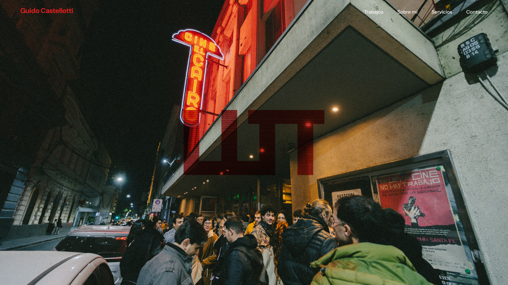

TRAYECTORIA
Una web a la altura de tu trabajo.

Estructura por áreas de práctica
Las áreas de práctica convierten información jurídica compleja en recorridos claros y accesibles.

Las áreas de práctica convierten información jurídica compleja en recorridos claros y accesibles.